NIME 02
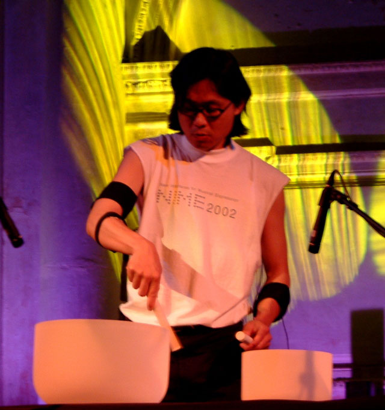
New Interfaces for Musical Expression
Media Lab Europe, Dublin, Ireland, May 24-26 2002
Highlights from the talks, demos, and concerts
Keynote Address
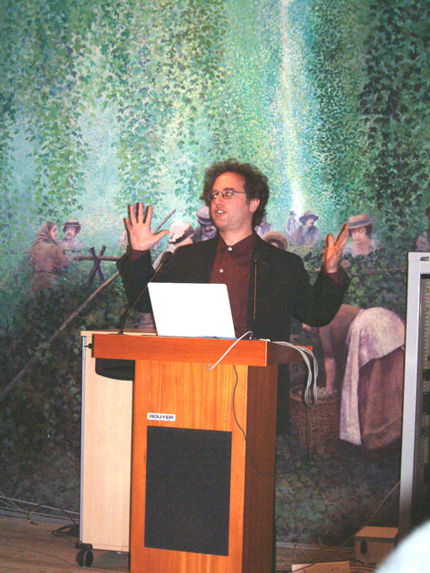
MIT Media Lab's Tod Machover reviews his work on HyperInstruments
Friday Concert
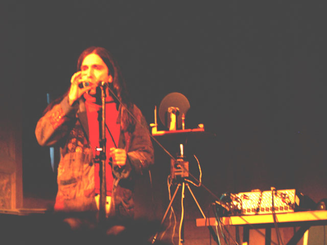
Jacques Dudon and the Photosonic Disk synaesthesizer
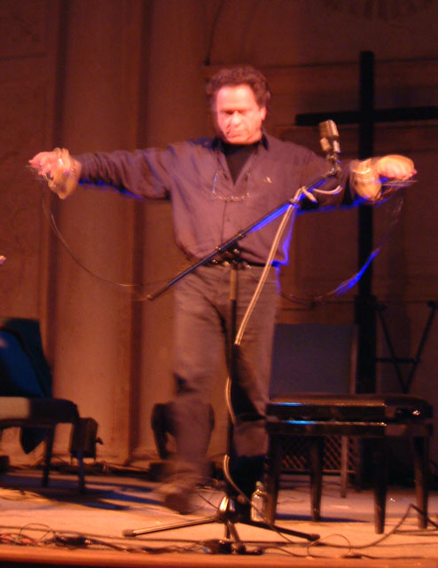
Alternative controllers pioneer and STEIM founder Michel Waiswisz playing
The Hands
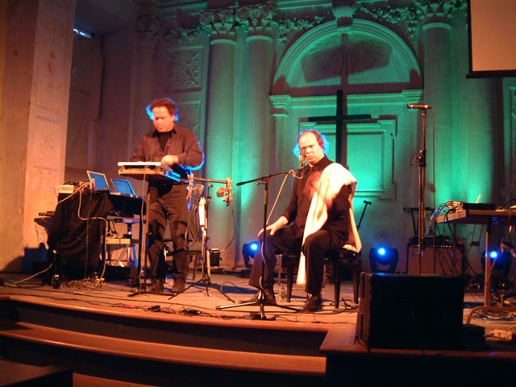
Michel Waiswisz on "glitched handsonic" with vocals by Najib Cherradi
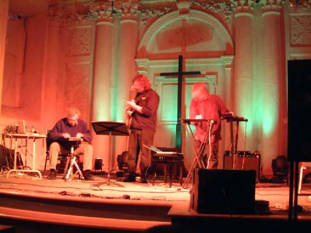
Electronic music pioneer David Wessel with the Situated Trio
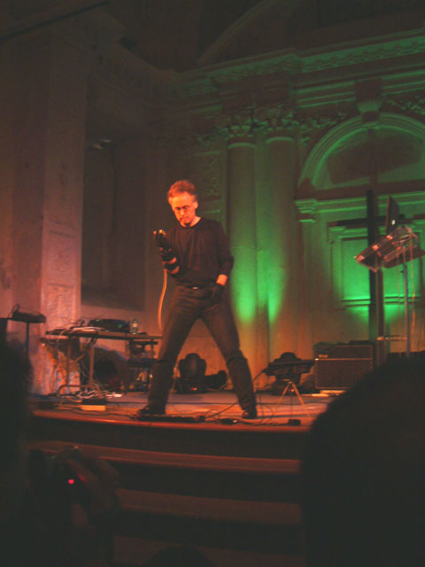
Butch Rovan playing the Interactive Glove Controller
Saturday Talks and Demos
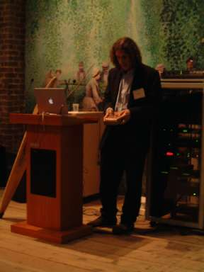
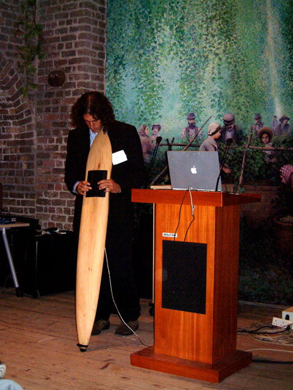
Robert Huott with the Kalimba and The Ski
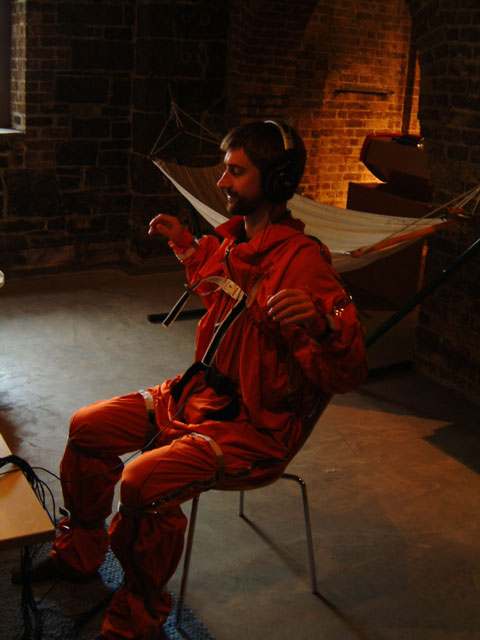
Chilling to Cutaneous Grooves in the Vibrotactile Suit
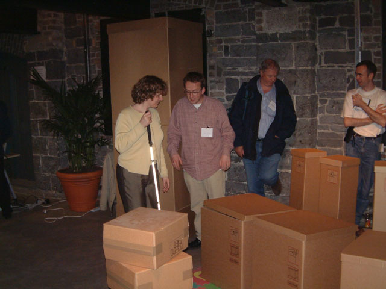
Local Chair, Media Lab Europe's Sile O'Modhrain visits the Musical Box Garden
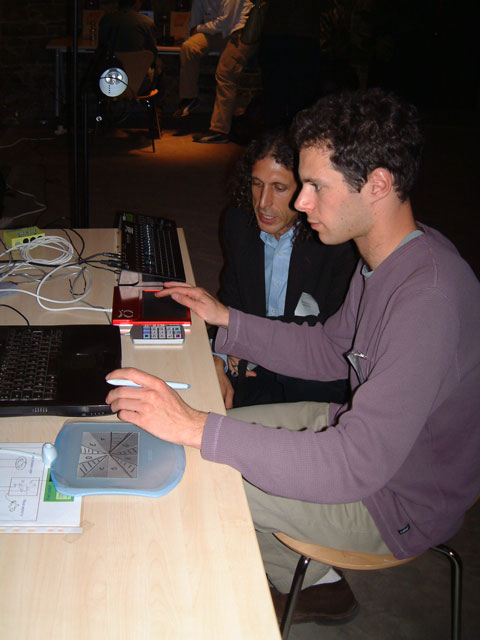
Tactex and Wacom interfaces were popular at NIME 02.
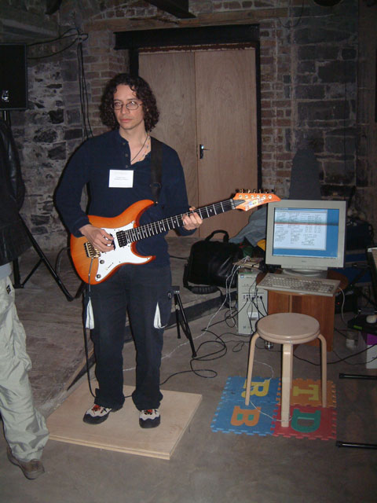
MLE and Limerick U.'s pressure sensing Sensor Floor and Sensor Chair

Axel Mulder demonstrating Infusion Systems I-Cube Interface and Sensors
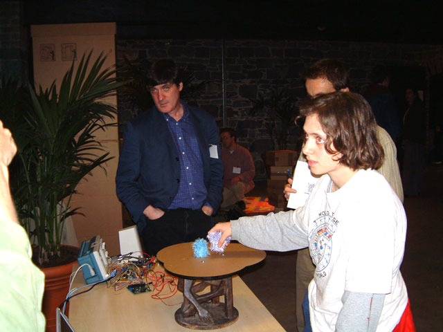
Conference Chair Joe Paradiso with the passive magnetic tags developed by his group at the MIT Media Lab
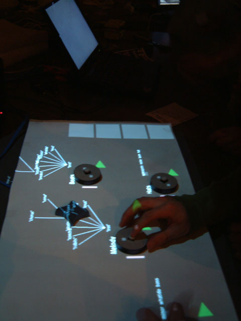
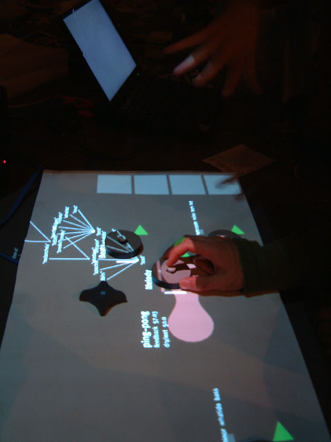
Audiopad: Tangible Grooves from Hiroshi Ishii's group
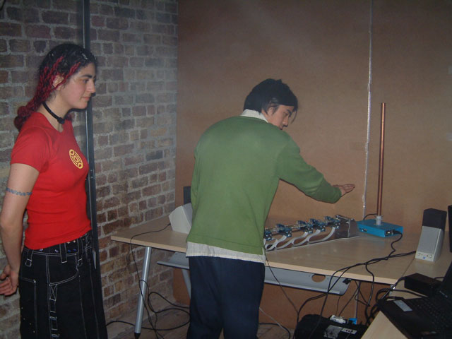
The Thermenova - theremin from Planet X
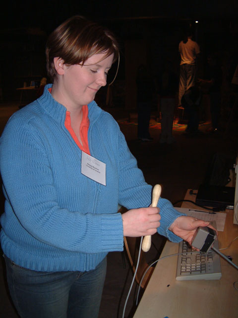
The Vodhran - Limerick University's virtual bodhran
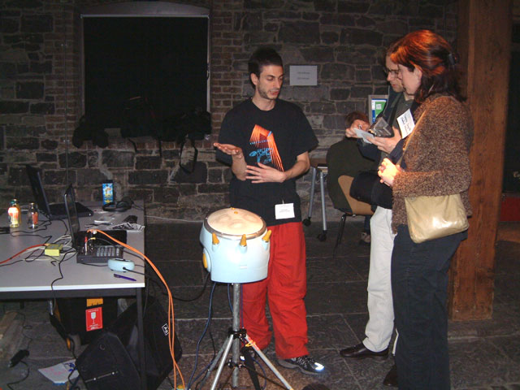
David Bernard explains the SKINS digital hand drum
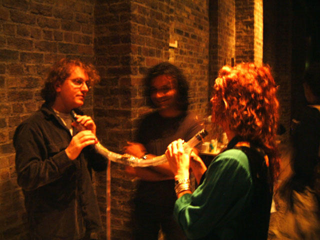
Sid Fels and Bean entertain Sergi Jorda with the Tooka
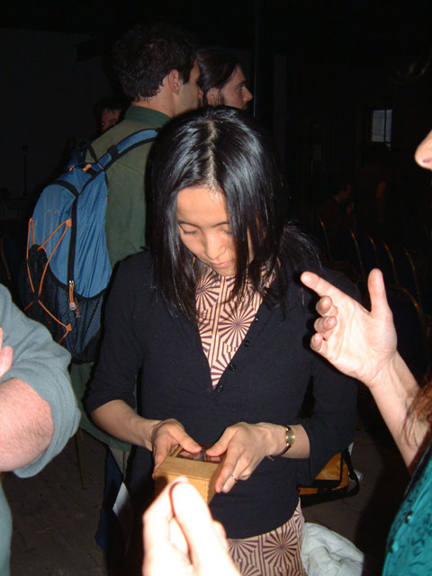
Sachiyo trying out the CrackleBox - Michel Waiswisz' skin conductance sonifier
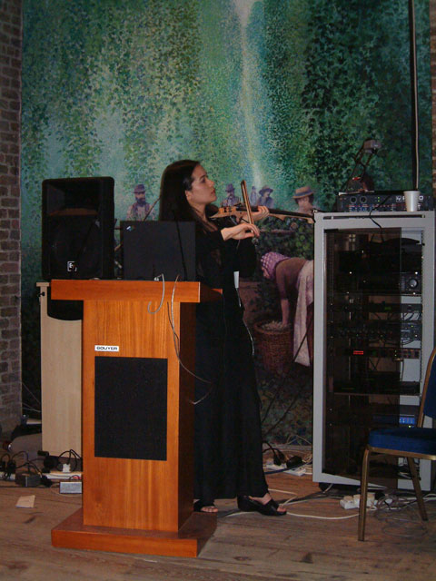
Diana Young shows off the HyperViolin
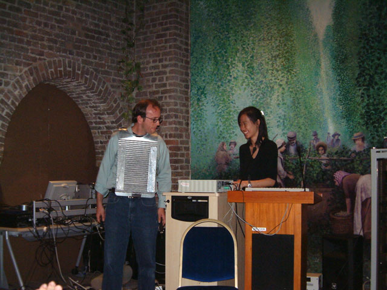
From Stanford U.'s CCRMA the mother of all washboards, the Mutha Rubboard.
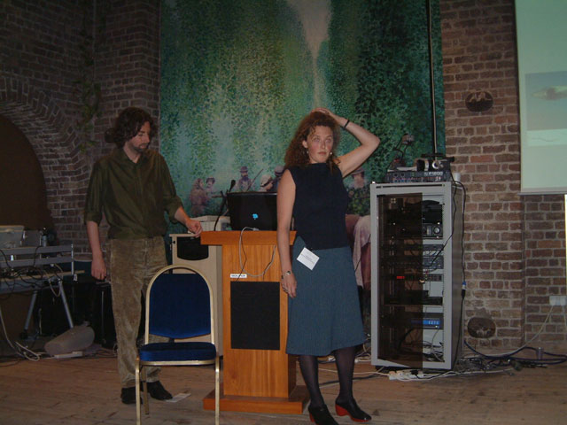
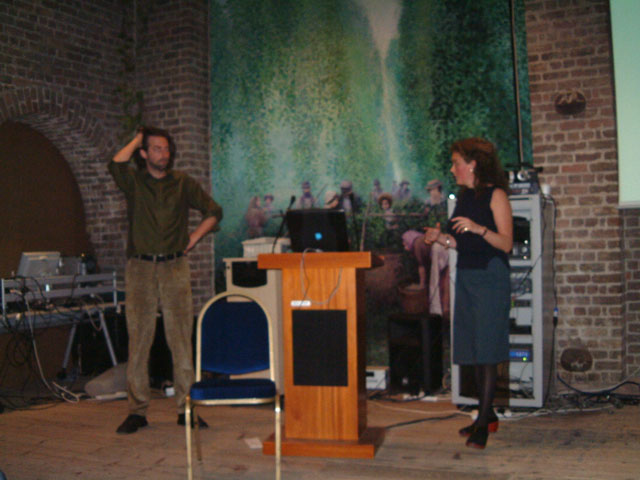
Bert Bongers and Yolande Harris ponder a question from the audience
Saturday Concert
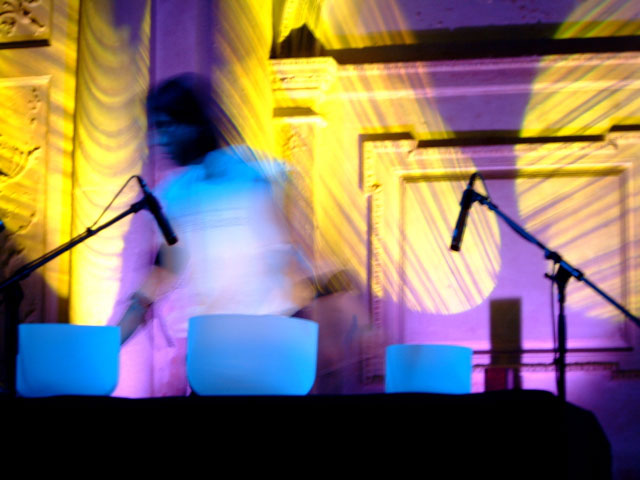
Atau Tanaka in Tibet
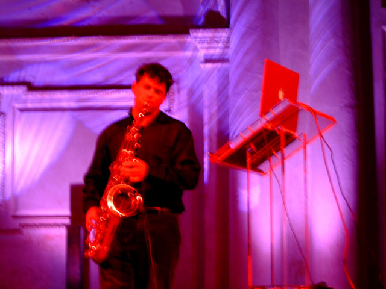
Matthew Burtner and the Metasaxophone
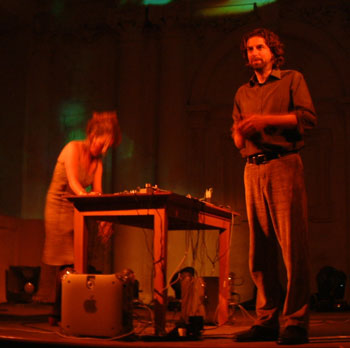
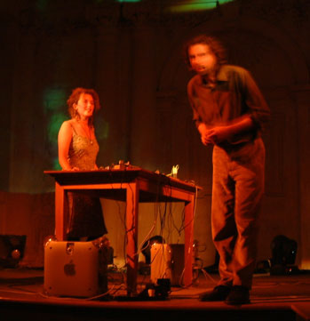
Yolande Harris and Bert Bongers with the Video Organ
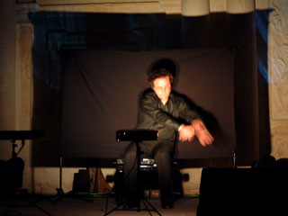
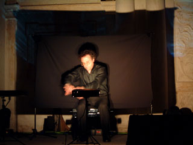
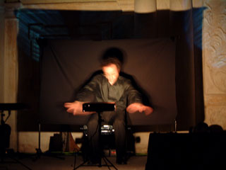
Leonello Tarabella playing his Imaginary Piano
Sunday Talks
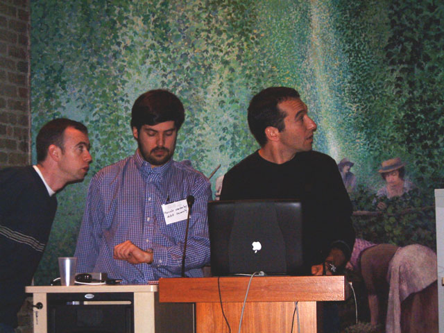
Gideon D'arcangelo may be wondering:
"How many MIT engineers will it take to get my Mac to work with this video projector?"
Closing Keynote Address

A tired but happy looking Joe Paradiso introduces interactive electronic music pioneer Joel Chadabe
Open Discussion about NIME 03
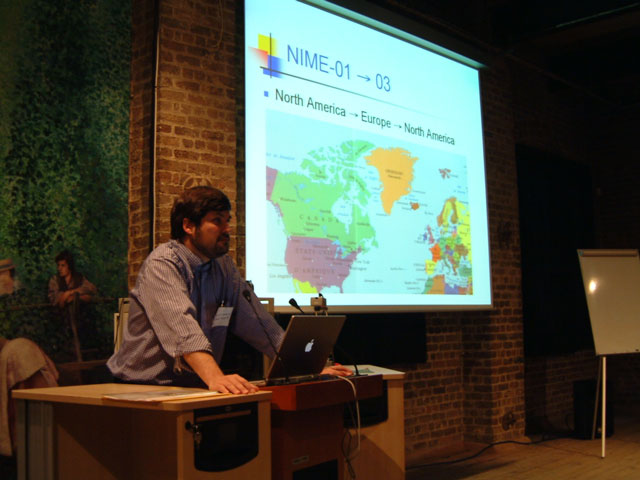
Marcelo Wanderley: Dublin today, tomorrow the world!.
A Brief History of NIME
NIME 01 was held as a CHI workshop in Seattle, April 1 and 2, 2001.
There were demos and a concert at the
Experience Music Project, now known as the Museum of Pop Culture..
NIME 02 was hosted by the Media
Lab Europe in Dublin. Online proceedings with more information about
the projects featured above may be found at the NIME 02 web site.
McGill University will host NIME 03 in Spring
2003. Information will be posted at the NIME domain
www.nime.org.
Higher resolution versions of the photos on this page
may be available on request.